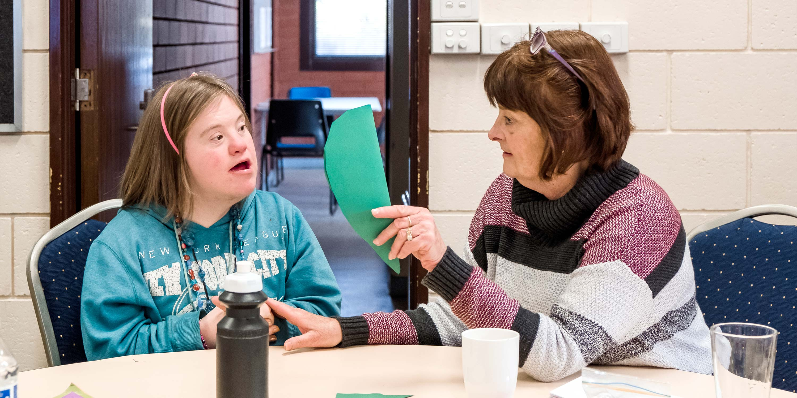

The ethics of care is a useful set of tools for sorting out what is the right or good thing to do in everyday situations. Many questions facing people with disabilities, the elderly and those who assist them, have no easy answers. The ethics of care cannot solve all problems, but is a good approach to dealing with them.
Women’s movements during the 1970’s helped shape the modern understanding of ethics of care. Early writers from the movement suggested that care is an important part of being a human being. We were all cared for as babies and children and most of us will require care again in our lives if we become sick, give birth, become disabled or frail with age. Ethics of care thinkers believed that in a fair society, care should be shared by men and women and people of all backgrounds. We shouldn’t think of people who need care as a burden or “less than” and we should respect those in our community who provide care for others.